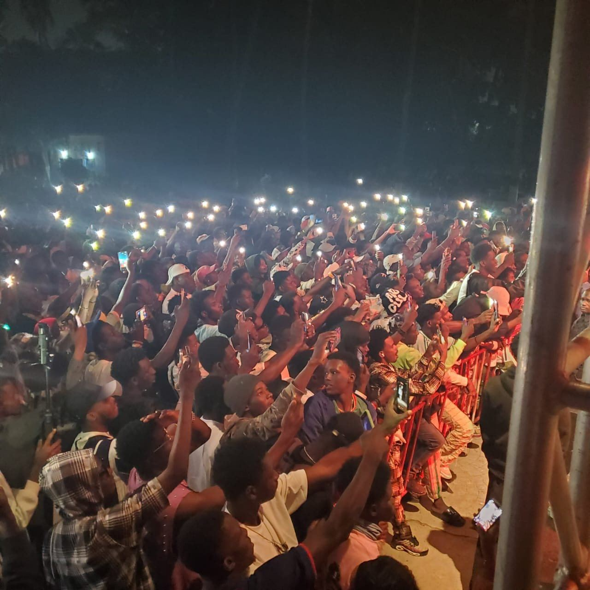
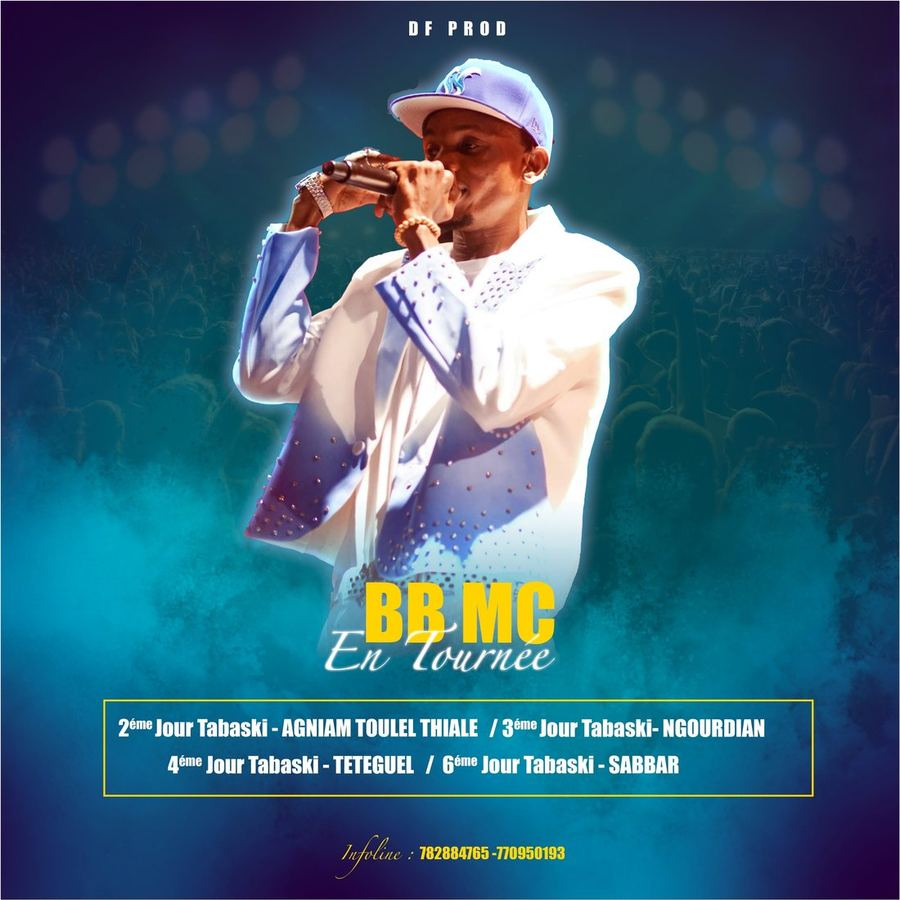
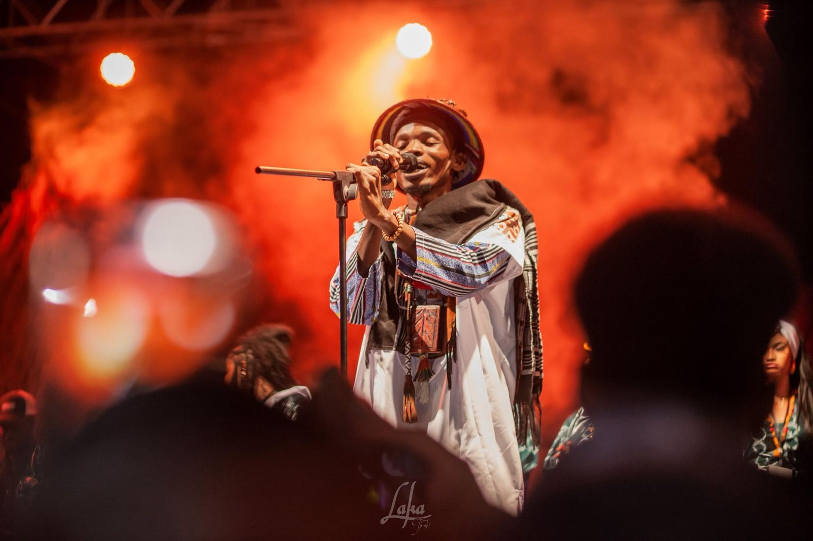
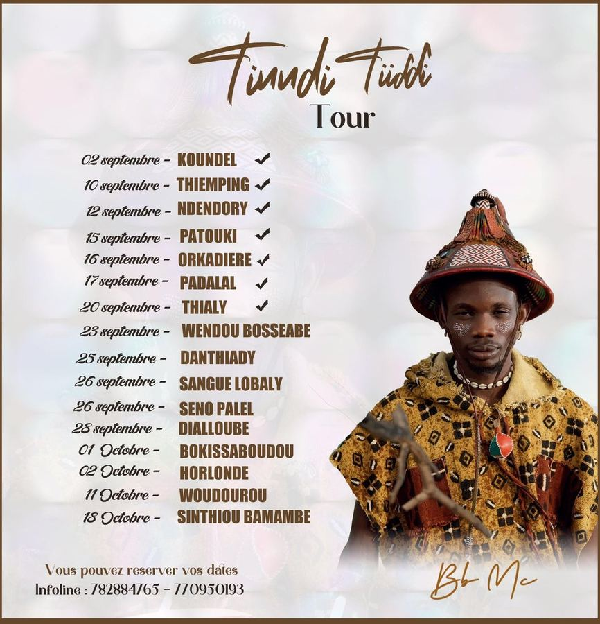
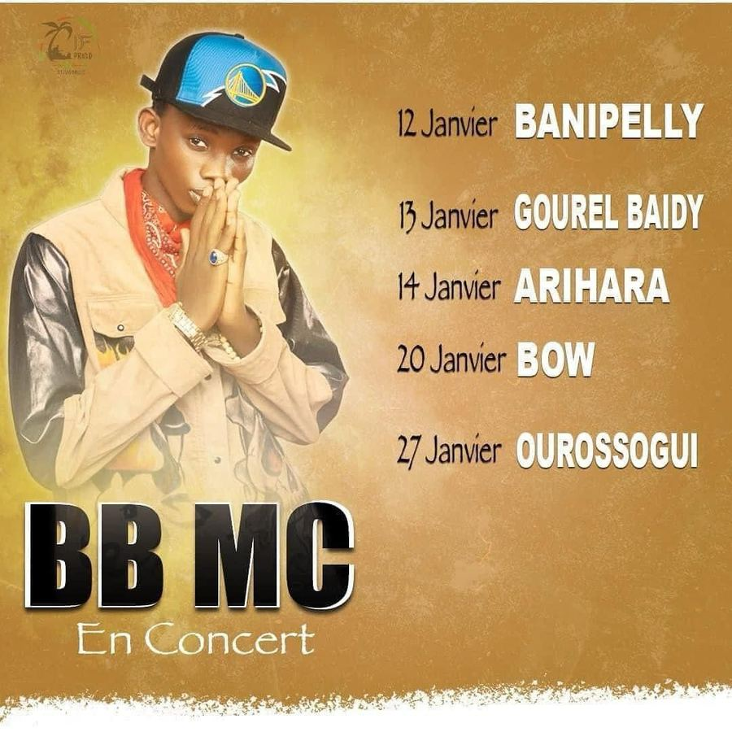
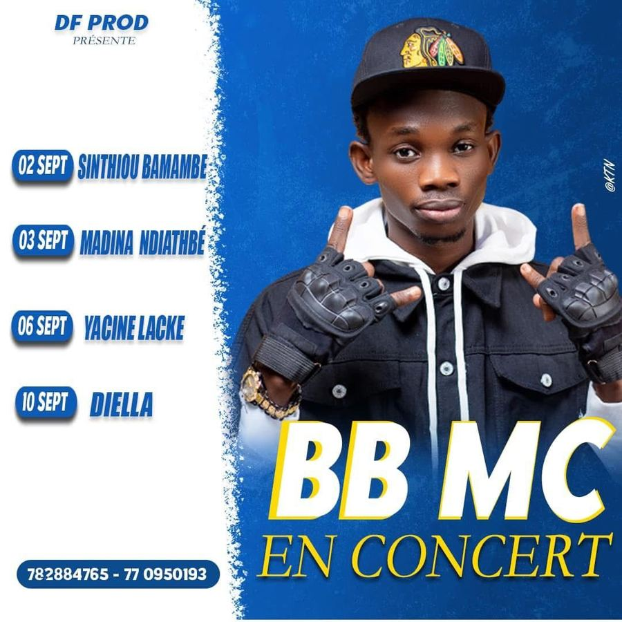
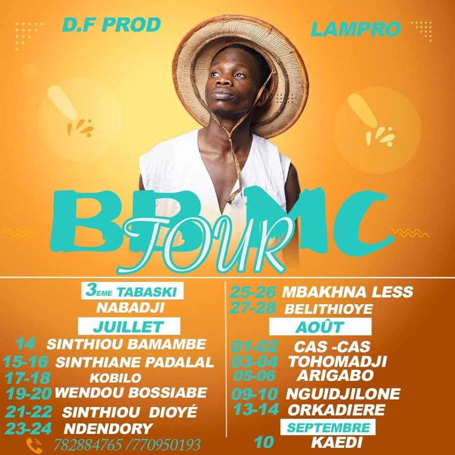

21 marsMatam22 marsNguenar04 avr.Marsa05 avr.Gouniang18 avr.Dakar · Douta Seck29 maiAgnam Toulel Thialé30 maiNgourdian31 maiTeteguel02 juinSabar12 aoûtWouro Mi14 aoûtDiamouguel10 sept.Garly03 oct.Gourel Famoly

Des villages du fleuve aux scènes de la capitale : toutes les dates de BB MC depuis 2021.
Accueil / Concerts
L'année 2022 reste le record avec la tournée Naayi Laddé (65 dates). En 2026, BB MC franchit un cap artistique avec son premier concert en live band.
Matam, Dakar, la tournée Tabaski et la tournée d'été : 13 concerts depuis mars.
Programmer BB MC

Show 4 Dakar · Maison de la Culture Douta Seck · 20h
Pour la première fois de sa carrière, BB MC est accompagné d'un orchestre de musiciens en live : guitares, batterie, claviers, choriste et DJ. Trois répétitions, une scénographie aux couleurs du Fouta, des artistes invités et un public conquis, lampes de téléphones levées.
Les moments forts du 18 avril 2026, filmés à la Maison de la Culture Douta Seck.
Cliquez sur une année pour afficher les dates.



